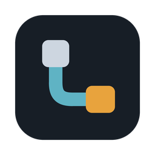

한국어 · English

Lepons
Run Claude Code and Codex on all your machines from one window, and let those machines read each other's codebases live.
Download free Windows 10/11 · macOS (Apple Silicon) · MIT licenseFeatures
- Codebase sharing between PCs — drag a folder onto another PC on the sharing map and that PC's Claude Code and Codex read and search it over MCP, one file at a time, so it costs only the tokens actually read.
- Split panes — up to four panes with sessions and files from different PCs side by side.
- Nothing to install remotely — SSH is all it takes; enter the password once and Lepons registers its key.
- Work that survives a dropped connection — remote sessions run in tmux.
- Workflow board — sessions, subagents and handoffs between PCs on one board.
- Usage batteries — what is left of your Claude and Codex 5-hour and 7-day limits.
Get started
- Install the latest release.
- ＋ Add PC → Remote PC and enter
user@host. - Click a folder and choose Claude Code or Codex.
The full guide is in the README.